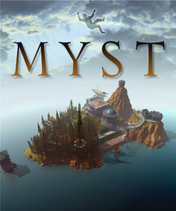

- Point-and-Click / Graphic Adventures: You look at a scene, examine objects, and solve environmental puzzles to unravel a story.
- Visual Novels: Interactive, heavily illustrated digital books where you read text and occasionally choose dialogue options that steer the plot.
- Walking Simulators: Games stripped of traditional challenges or fail-states, where the entire goal is to walk through a highly atmospheric environment to uncover a narrative.
